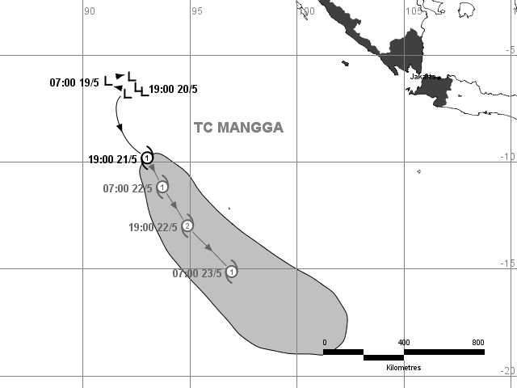

Tropical Cyclone Warning Centre (TCWC) JAKARTA
|
|
BADAN METEOROLOGI KLIMATOLOGI DAN GEOFISIKA Tropical Cyclone Warning Centre (TCWC) JAKARTA |

| Peringatan Bahaya | Informasi Sebelumnya | ||||||||||||||||||||||||||||||
|
|
||||||||||||||||||||||||||||||
| Informasi Saat Ini | Prakiraan (pada 24, 48 dan 72 jam yang akan datang) |
||||||||||||||||||||||||||||||
|
|
Prakiraan lintasan yang ditunjukkan diatas adalah prakiraan intesitas dan lintasan siklon terbaik yang dapat diberikan BMG. Masih ada kemungkinan ketidaktepatan prakiraan, daerah abu-abu menunjukkan kemungkinan jangkauan lintasan.
Perhatian:
Siklon tropis CEMPAKA memberikan dampak berupa :
- Hujan dengan intensitas sedang hingga lebat di Selatan Jawa Barat, Jawa Tengah, Yogyakarta, Jawa Timur, dan Bali.
- Angin kencang hingga 20 knot berpotensi terjadi di wilayah selatan Jawa.
- Gelombang tinggi 1.25 - 2.5 meter di Perairan Selatan Bali hingga Pulau Sumba, Selat Bali, Selat Lombok, Selat Alas bagian Selatan.
- Gelombang tinggi 2.5 - 4 meter di Perairan Selatan Jawa Tengah hingga Jawa Timur, Samudera Hindia Selatan Jawa Timur hingga Bali.
Prakiraan siklon tropis:
| Waktu (WIB) | Kecepatan Angin Maksimum (km/h) |
Lingtang (persepuluhan derajat) |
Bujur (persepuluhan derajat) |
|
|---|---|---|---|---|
| 0hr | 07:00 November 29 | 65 | 9,5LS | 111,5BT |
| +6hr | 13:00 November 29 | 55 | 9,0LS | 111,3BT |
| +12hr | 19:00 November 29 | 55 | 9,5LS | 111,1BT |
| +18hr | 01:00 November 30 | 45 | 9,9LS | 110,9BT |
| +24hr | 07:00 November 30 | 45 | 10,3LS | 110,7BT |
| +36hr | 19:00 November 30 | 45 | 11,1LS | 110,2BT |
| +48hr | 07:00 Desember 1 | 45 | 11,4LS | 110,1BT |
| +60hr | 19:00 Desember 1 | 45 | 12,1LS | 109,9BT |
| +72hr | 07:00 Desember 2 | 35 | 12,4LS | 110,1BT |
Peringatan dini berikutnya akan dikeluarkan pada tanggal Rabu 29 November 2017 14:00 WIB.